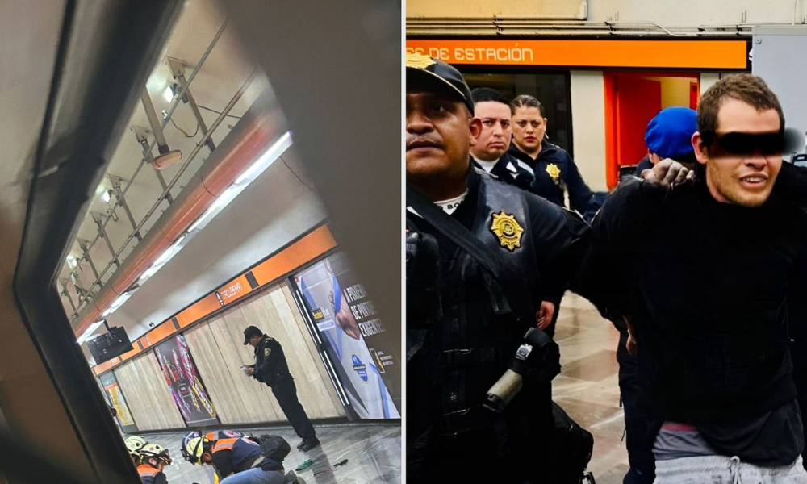

Ataque en Metro Tacubaya: Agresor Jimmy N
Jimmy, atacante que dejó 4 personas apuñaladas en la estación Tacubaya de la Línea 7 del Metro CDMX, fue vinculado a proceso; te contamos el avance del caso.

Un ataque en el Metro CDMX se registró la tarde del 19 de noviembre en la estación Tacubaya de la Línea 7, donde un sujeto agredió a 4 personas que terminaron apuñaladas.
El agresor, identificado como Jimmy Arnulfo “N”, será procesado por las autoridades acusado por homicidio calificado en grado de tentativa en perjuicio de 4 víctimas.